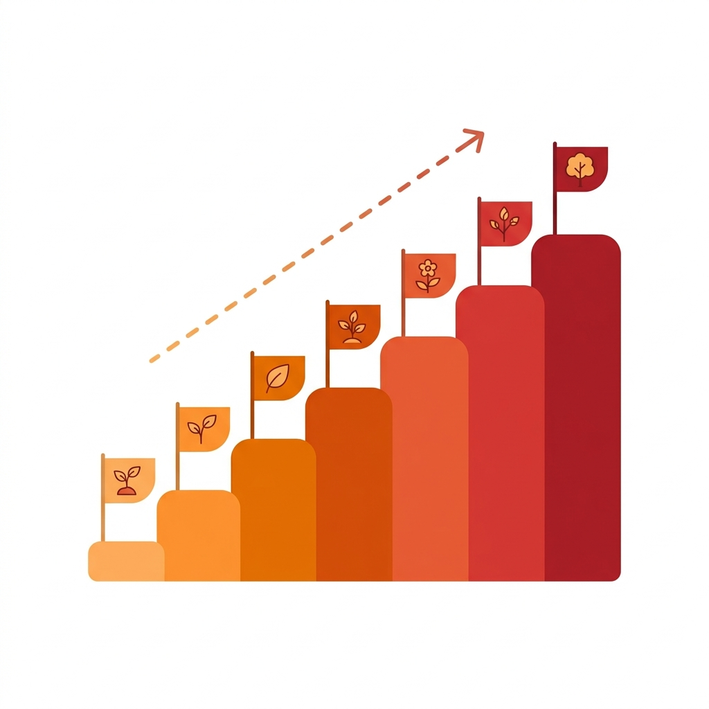

おひさま会にDX推進部が正式に発足したのは、2026年4月のことだ。
だが、デジタル化の取り組みはそれよりずっと前から始まっていた。2025年2月、法人として初めてAI業務自動化プラットフォームを導入。同年10月にはDX推進の専任担当者を採用した。
そして2026年1月、AIコーディングツールを導入してからの加速が凄まじかった。わずか5ヶ月で51のシステムが稼働するまでになったのだ。
この記事では、中小の在宅医療法人でDXがどのように芽生え、組織化に至ったかを振り返る。
おひさま会のDXは、2025年2月のAI業務自動化プラットフォームの導入から始まった。訪問看護の記録やワークフローの電子化が進み、「デジタルって便利だ」という感覚が現場に芽生え始めた。
ただ、この時点ではまだ「外部ツールを導入した」段階だ。本当の変化は、その後に訪れる。
DXの最初の一歩は、「特別なこと」ではなく「便利なツールを使い始めること」だった。最初から壮大な計画はいらない。

AIコーディングツールがあれば、「こういうの作れない？」と言われたその週には動くものを渡せる。レントゲン依頼のフロー管理、FAXの自動仕分け、保険証のAI判別など、次々に現場の声がシステムになっていった。
従来なら外注して数百万円・数ヶ月かかるシステムが、数日で動く。この圧倒的なスピードが、現場の信頼を一気に掴んだ。
この急速な成長を可能にしたのは、3つの要素の掛け合わせだった。
中小医療法人でDXが進むかどうかは、経営トップの姿勢で8割決まる。
おひさま会の場合、理事長自身がテクノロジーに強い関心を持っていた。新しいツールのデモを見せると「面白いね、すぐやろう」と言ってくれる。この一言が、どれだけ現場の推進力になるか。
ただし、理事長の「やろう」だけでは組織は動かない。現場のスタッフが「自分たちのために作られたツールだ」と感じることが大切だった。そのために心がけたこと：
組織化が必要になった理由は3つあった。
| 課題 | 具体的な問題 |
|---|---|
| 属人化リスク | 担当者が休んだらシステムの運用がわからない |
| 優先順位の判断 | 「あれも作って」「これも直して」が同時に来る。組織的に優先順位を決める仕組みがなかった |
| 拠点間の温度差 | 5クリニックでDXの浸透度にばらつきがあった |
2026年4月、DX推進部が正式に発足した。目的は「作る」ことではなく、「回す」こと。システムを安定的に運用し、現場の声を吸い上げ、優先順位をつけて改善していく。その体制を整えるための組織化だった。
おひさま会の経験から言えることをまとめる。
そして、ある程度の規模になったら組織化する。一人の頑張りに依存する体制は、長くは続かない。
DX推進部の発足は、おひさま会にとって「DXが特別なことではなくなった」証でもある。デジタルは日常の一部になった。次に考えるべきは、この仕組みをどう維持し、どう進化させていくかだ。
DXの本質は、テクノロジーではない。「現場が楽になること」を積み重ねた先に、気づけば組織が変わっている。それが、おひさま会が歩んできた道だ。